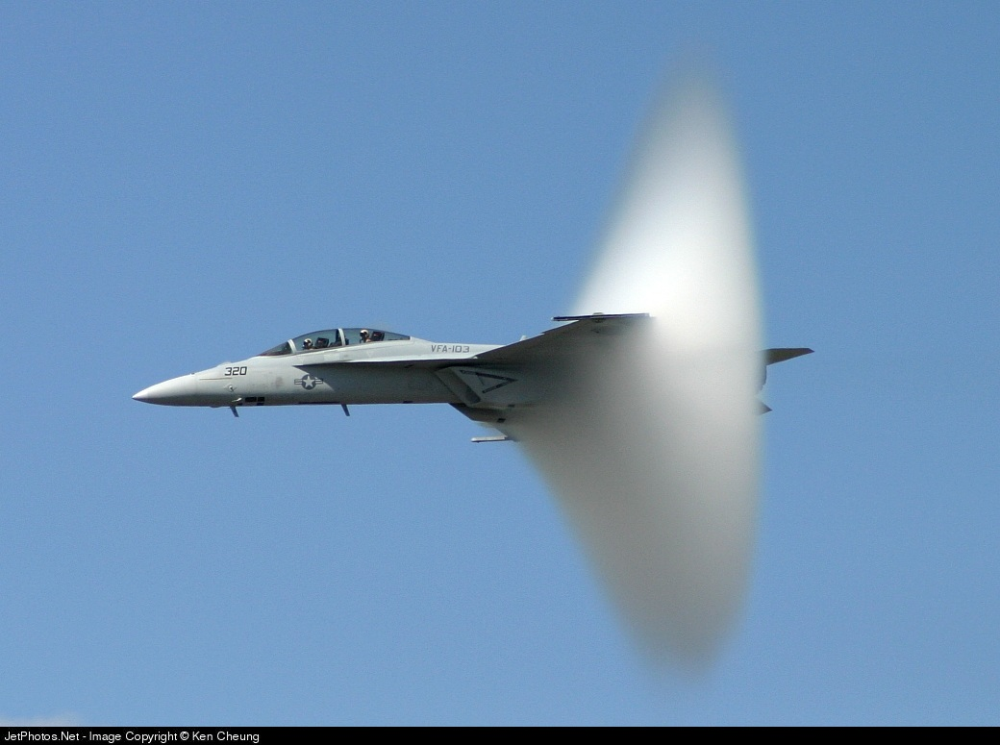

Table of contents
- Heat
- First Law of Thermodynamics
- Second Law of Thermodynamics
- Entropy
Shock waves
Shock waves may be produced by the wings of a Navy FA 18 jet. The shock waves are visible because the sudden decrease in air pressure in them caused water molecules in the air to condense, forming a fog. 


Click here to see more examples.
Understanding adiabatic processes allows you to understand why popping the cork on a cold bottle of champagne or the tab on a cold can of soda causes a slight fog to form at the opening of the container. At the top of any unopened carbonated drink sits a gas of carbon dioxide and water vapor. Because the gas pressure is greater than atmospheric pressure, the gas expands out into the atmosphere when the container is opened. Thus, the gas volume increases, but that means the gas must do work pushing against the atmosphere. Because the expansion is rapid, it is adiabatic, and the only source of energy for the work is the internal energy of the gas. Because the internal energy decreases, the temperature of the gas also decreases, which causes the water vapor in the gas to condense into tiny drops of fog.